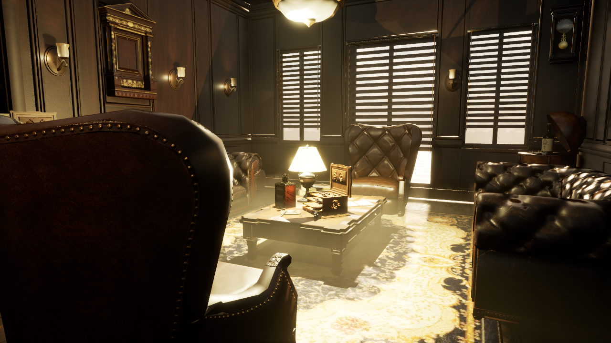

Week 10: profiling and optimization
Start here
Download the complete teaching kit, extract it, and open START-HERE.html. It includes the deck with notes, printable handouts, visual guides and course tools. UE/Fab content and comparison projects are separate downloads listed below.
To keep a Git checkout: git clone https://github.com/anthonymonteagudo/Week10-Profiling.git, then git pull --ff-only for updates. The generated HTML pages open locally without installing Node or Python. Python is needed only for the optional Python tools.
- Set up the UE 5.7 furnished lounge lab. The starter ZIP contains our project tools and setup; obtain the free Fab environment separately.
- Follow the student lab and evidence worksheet.
- Use the single Week 10 slide deck and optimization study guide.
The lab opens Lounge_Unoptimized, a furnished interior with deliberately introduced production mistakes. Keep its reference map unchanged and test one reversible change. The content-only editor plugin adds Tools > Week 10 Optimization for a custom viewport overlay and a searchable local dashboard. Disable the overlay before timing. Findings are candidates rather than proven savings.

Supporting tools and demonstrations
- Capture comparison and frame-budget report process Unreal CSVs. Run
python Tools/compare_captures.py --helpfor options. - Read-only inventory is an optional simple Python rule example; the lab plugin is the main audit workflow.
- Texture mask packer and practice inputs require Python and Pillow. Run
python Tools/pack_masks.py Tools/DemoInputs/AO.png Tools/DemoInputs/Roughness.png Tools/DemoInputs/Metallic.png Packed_ORM.png. - Material, debris and Niagara comparison projects: UE 5.7 Windows editor binaries and C++ source are supplied. Rebuild with the Windows C++ toolchain if your engine build does not match. These are separate instructor-led demonstrations.
- Editable texture demo release opens ArrayDemo and is separate from the optimization lab.
Use the local dashboard generated from your own open map. The lecture's private hosted dashboard is a historical snapshot and is not a live view of your project. Instructor answer keys and the complete licensed classroom working copy are distributed separately.
Material and shader logic
The deck now includes the shader-cost sequence at 91–110. The study guide supplies optimization decisions, graph recipes, two runnable experiments and a results worksheet. Use the updated comparison-project release for DynamicZero/MasterOff and UVPixel/UVVertex.
Browse the material lab source and experiment instructions. Generated material assets are supplied in the v2 comparison release.
The consolidated deck has 169 slides. Optional article/04 investigations cover first-use PSO hitches, Nanite/fallback/WPO checks, compile/cook budgets, trace counters and calibrated quality tiers. The main lounge activity is slide 128.
Demo captures
Open the 28-capture gallery or download the screenshot pack. It covers the furnished room, Light Mixer, Timing Insights, stat unit/GPU, material buffers, Nanite, VSM cache, GPU resources and the custom audit. Each image includes its question, live steps and interpretation limits. The v4 lab explicitly uses DX12 SM6; earlier lounge timing results used SM5 fallback rendering.
The 28 captures are embedded directly in the deck. The main sequence runs through 142; reference comparisons and the complete numbered walkthroughs are 143–169. Materials/textures/shader logic occupy 71–110, and the custom audit appears before the break and lab.
The final slide (169) lists the source collections and features Tom Looman first. Open the complete source index for all 82 article, video, documentation and media links, with relevant slide numbers.
Slide 7 introduces A/B testing; 149 supplies the detailed setup. Open the PowerPoint Notes pane for local definitions and clarifications on 165 slides (106 core terms plus the new texture clarifications). The slide order, measured sequences and thirty-minute lab at 128 are preserved.
Visual definitions
Open the texture and geometry field guide. Slides 82–84 use six of its source illustrations; the guide includes nine images across compression, padding, texel density, mip levels and Clamp/Wrap. Read the Notes pane for the full classroom explanations. The current deck has 169 slides, break 127, lab 128 and sources 169.